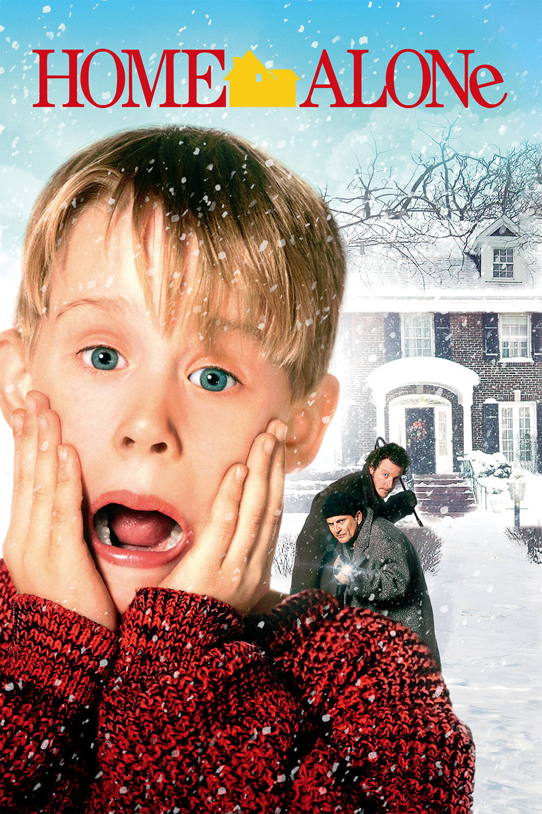
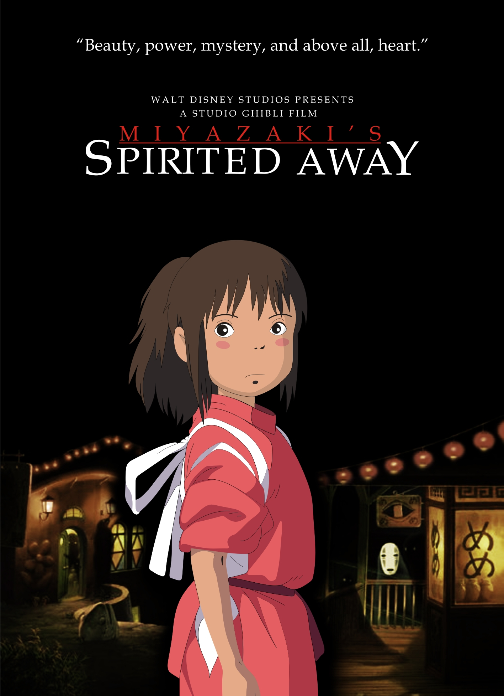

My favorite Movies
Below are some of my all time favorite movies
Home Alone
Released on November 16, 1990

This is one of my favorite childhood movies because it captures the life of an eight-year old boy named, Kevin McCallister, who is mistakenly left at home when his family goes on a trip to Paris.
Hot Persuit
Released on May 8, 2015

This is a comical action movie about policewoman Cooper escorting Daniella Riva, a wisecracking Colombian beauty, from San Antonio to Dallas so she and her husband can testify against a drug lord. Two of my favorite celebrities, Reese witherspoon and Sofia Vergara are staring in this movie.
Spirited Away
Released on September 20, 2002
This is one of the classic movies from studio Ghiblli. This animated movie features a 10-year old girl, Chihiro and her parents who stumbled upon an abandoned amusment park. From there secrets are revealed about the abandoned amusment park and the spirits that are there.